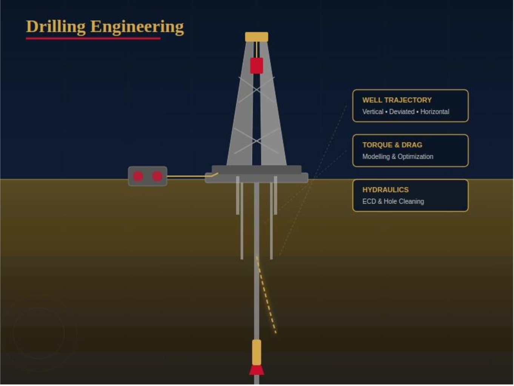
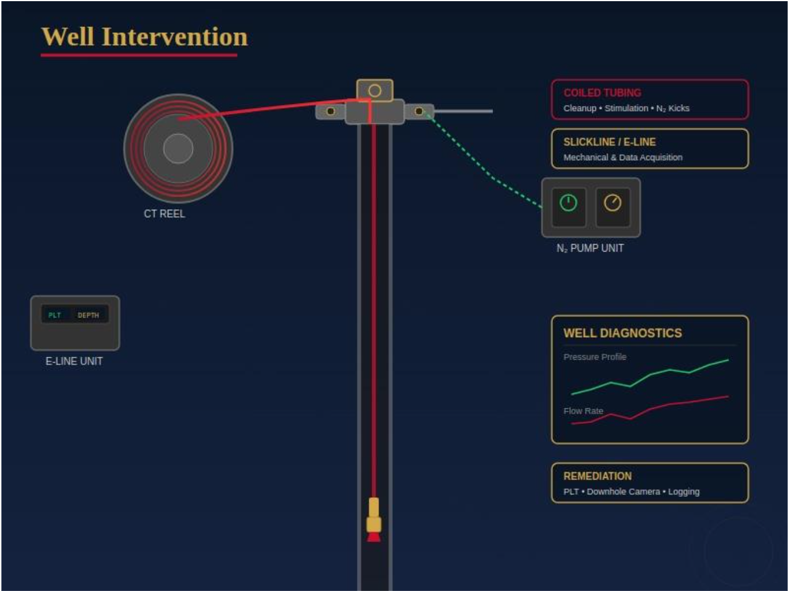
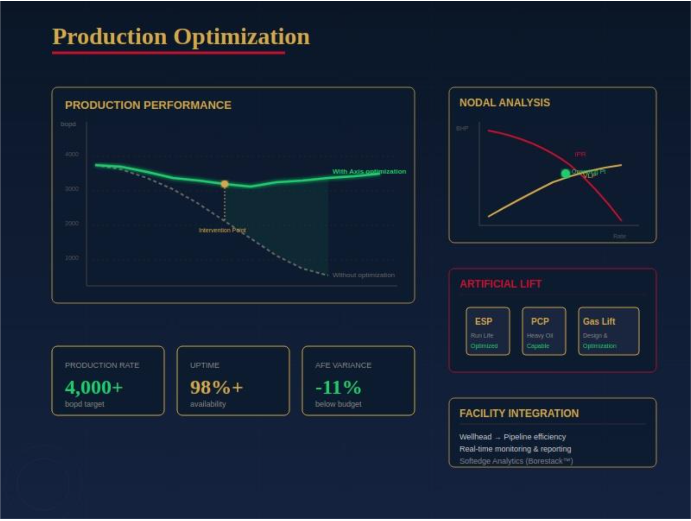
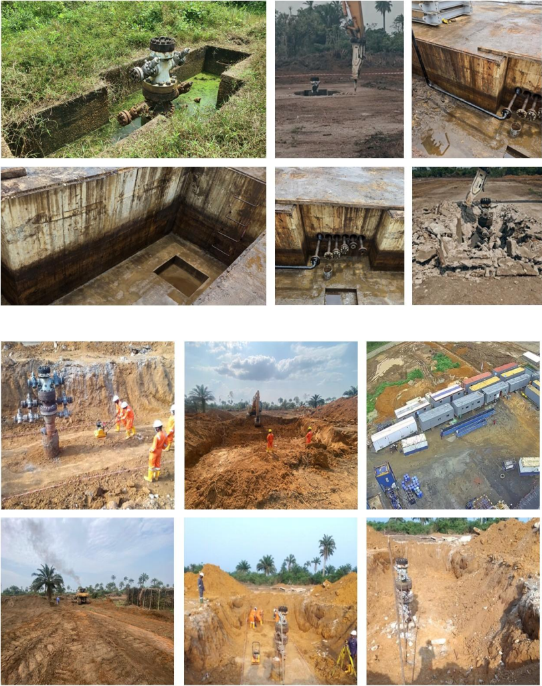
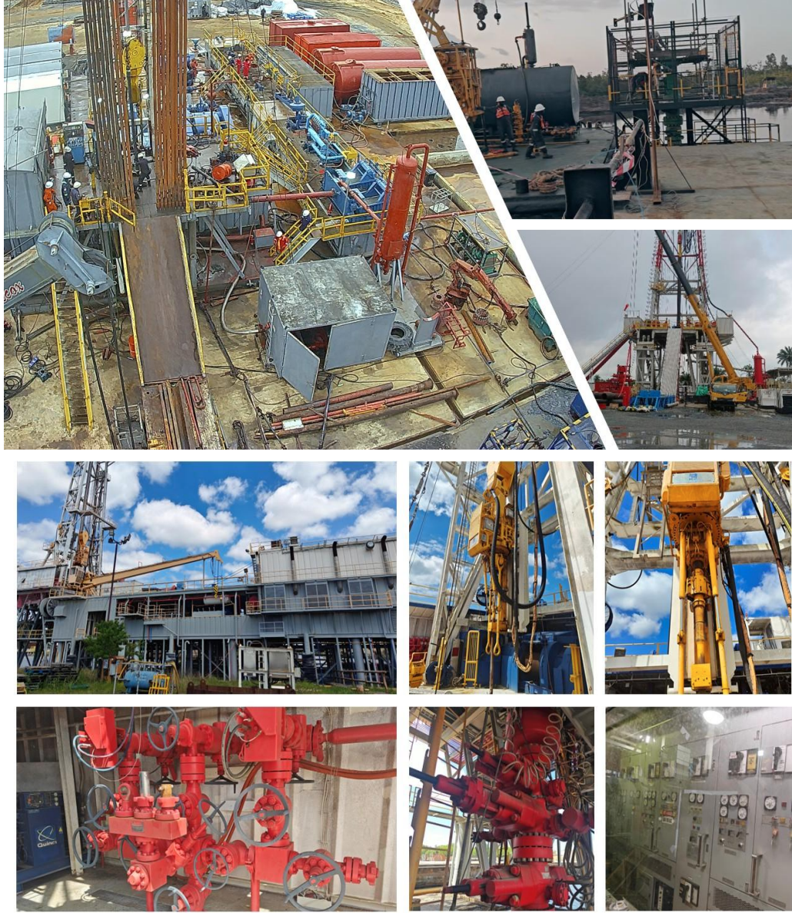
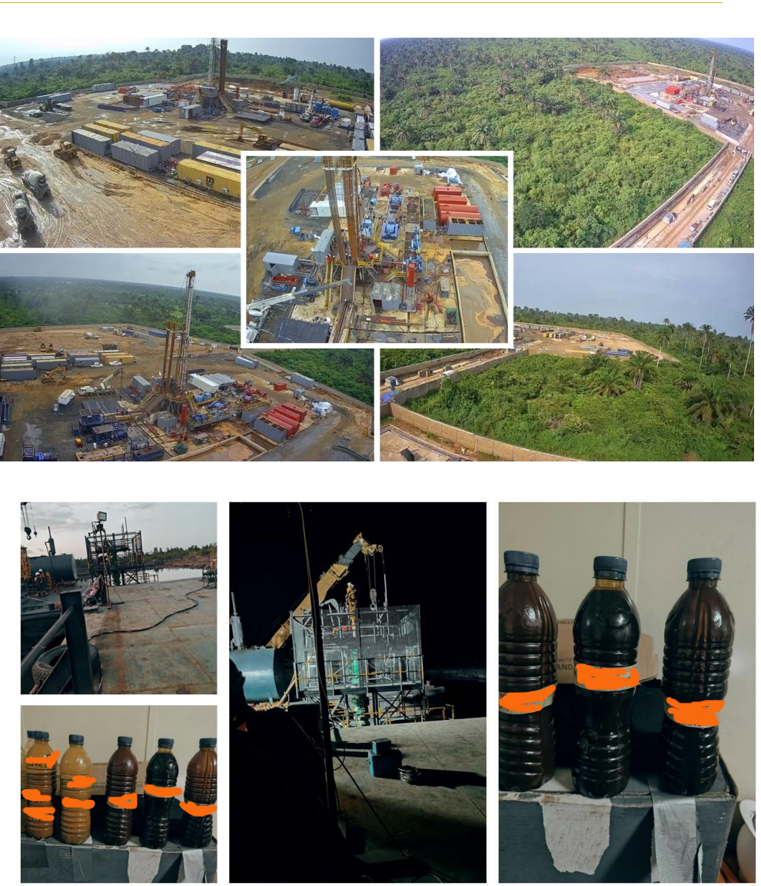

Engineered Right, Creating Value
Integrated Well Delivery for Nigeria, West Africa, and Beyond
Axis Well Delivery Systems Ltd delivers turnkey well engineering, drilling, completions, intervention, field development planning, and production optimization across the full well lifecycle. We combine indigenous insight with global standards to build producing assets, not just wells.
Goal Zero
IOC-Grade Quality
100% Indigenous Ownership
West Africa Ready
Company Profile
Integrated well delivery profile
Headquartered in Nigeria, Axis bridges complex subsurface challenges with efficient, reliable, and commercially optimized production outcomes.
Our operating model is built around integrated well delivery, technical precision, and disciplined execution. We work across the full well lifecycle, reducing vendor fragmentation while improving quality, safety, and cost control.
Brownfield Revitalization
Production uplift and recovery efficiency
Integrated Delivery
Single-point accountability across vendors
Well Integrity
API, ISO, and IADC aligned assurance
Value Creation
Safe, efficient, profitable delivery
Who We Are
Axis Well Delivery Systems Ltd
A focused indigenous partner delivering well engineering and execution services with the discipline, consistency, and polish expected from top-tier industrial operators.
Well Engineering
Completions
Intervention
Production Optimization
QA / QC
Field Development
“We do not just deliver wells — we deliver producing assets, operational confidence, and long-term value creation.”
About Us
Deep local insight, globally benchmarked execution
Axis Well Delivery Systems Ltd is a leading indigenous oilfield services company delivering fully integrated, turnkey solutions to Nigeria’s upstream petroleum sector. Strategically positioned in Nigeria, the company bridges complex subsurface challenges with efficient, reliable, and commercially optimized production outcomes.
Our capabilities span the entire well lifecycle — from drilling engineering and well construction to completions, well intervention, and production optimization. Through a fully integrated delivery model, Axis enables operators to streamline contractor interfaces, reduce execution risk, and achieve cost-efficient, high-performance well delivery.
Axis provides comprehensive Well Integrity, QA/QC, and Asset Reliability services, underpinned by a risk-based, systems-driven approach aligned with internationally recognized standards including API, ISO, and IADC. This framework ensures end-to-end lifecycle assurance — from equipment acceptance and verification through to sustained operational reliability and performance optimization.
Axis is uniquely positioned to support the evolving Nigerian upstream landscape, with a strong focus on brownfield revitalization and marginal field development. By combining deep local operational insight with global engineering best practices, we deliver fit-for-purpose solutions that unlock reservoir value, enhance asset performance, and accelerate time to first oil.
“We do not just deliver wells — we deliver producing assets, operational confidence, and long-term value creation.”
Vision
To be the foremost indigenous partner of choice in Africa, redefining excellence in integrated well delivery and sustainable asset optimization.
Mission
To deliver superior value to upstream operators by providing innovative, end-to-end well engineering and production solutions. We are committed to maximizing the potential of marginal and brownfield assets through technical precision, operational safety, and a deep-rooted understanding of the African energy landscape.
Our Core Promise
To deliver wells safely, efficiently, and profitably — transforming subsurface potential into sustainable production.
Local Insight, Global Standards
Indigenous operational intelligence combined with internationally benchmarked engineering practices.
Operational Integrity
Goal Zero philosophy embedded into HSSE, risk management, and process discipline.
Asset Maximization
Completion strategies, intervention planning, and production uplift focused on value.
Integrated Execution Excellence
Reduced interface risk and seamless execution from planning through production.
Cost Efficiency & Value Delivery
Lean structures, optimized workflows, and proactive NPT management.
Leadership & Governance
Seasoned well delivery professionals with deep operational credibility
Axis is led by seasoned well delivery professionals with decades of combined experience across IOCs, NOCs, and indigenous operators. Our leadership team brings hands-on operational credibility — the kind that can only come from years at the wellsite, in the engineering office, and at the decision table.
Usman Mbaekwe
Managing Director / CEO24+ years in upstream oil & gas spanning IOC, NOC, and indigenous operations. Career includes ExxonMobil, Seplat Energy, Platform Petroleum, and Schlumberger. Designed and executed completions for 37+ wells and led major field delivery campaigns.
Mechanical Engineering
Reservoir Evaluation
Data Science & Analytics
API / IADC / ISO Governance
Danny McManus
Wells Manager47 years of drilling operations experience spanning land rigs, shallow water submersibles, platform rigs, jack-ups, and 6th-generation drillships. Deep expertise in complex HPHT wells, managed pressure drilling, and deepwater hub-class exploration wells.
Driller
Toolpusher
Offshore Installation Manager
Samuel Ilonze
SSE Advisor (Subsurface)22+ years in reservoir engineering across major operators and consulting firms. Expert in pressure transient analysis, reservoir simulation, reserves estimation, FDP development, and production forecasting.
Reservoir Simulation
Well Performance
FDP Development
Sunny Ogbouma
HSE Manager15+ years in drilling operations and HSSE management. Implements Goal Zero philosophy across all Axis operations with strong competence in drilling supervision, factory acceptance testing, and safety systems.
IWCF Level 4
CDS
BOSIET
Goal Zero
Roger McCollin
Operations Lead / International AdvisoryExtensive experience in rig operations, drilling execution, and equipment readiness assurance. Supports international standards alignment, quality assurance, and cross-border project coordination.
Rig Readiness
International QA
Cross-Border Delivery
Combined Leadership Experience: 100+ years across ExxonMobil, Shell, Schlumberger, Seplat Energy, Platform Petroleum, ConocoPhillips, Kappa Engineering, ENSCO Offshore, and indigenous operators.
“100+ years of leadership. One standard: world-class well delivery.”
Our Services
Comprehensive well lifecycle solutions
We provide comprehensive well lifecycle solutions, combining technical excellence with operational efficiency to deliver measurable results for our clients across Nigeria’s upstream sector.
Integrated Well Delivery (IPM)
Full lifecycle well delivery with vendor coordination, cost control, and risk management.
Drilling Engineering
Well design, torque & drag modelling, hydraulics optimization, and DWOP support.
Completions & Sand Control
Gravel pack, frac pack, tubing design, artificial lift, and barrier management.
Well Intervention
Slickline, electric line, coiled tubing, diagnostics, and remediation.
Production Optimization
IPR/VLP modeling, monitoring, facility integration, and uplift planning.
Service Gallery
Drilling, completions, intervention, and production optimization visuals.




Turnkey Delivery Model
Four phases from de-risking to sustained production
| Phase | Core Objective | Timeline Focus | Key Deliverables |
|---|---|---|---|
| I. Engineering | De-risking the asset | Pre-spud | Well trajectory & casing design, geomechanics, AFE optimization, DWOP facilitation |
| II. Execution | Operational precision | Drilling & completion | Rig/service integration, real-time NPT management, dual-string/gravel pack completions |
| III. Activation | Production readiness | Post-completion | Engineered unloading, artificial lift readiness, surface tie-in |
| IV. Lifecycle | Asset optimization | Ongoing | Continuous production monitoring, sand control performance, intervention planning |
Engineering
Trajectory, casing, geomechanics, and AFE.
Execution
Rig integration, completion delivery, and NPT control.
Activation
Well unloading, lift readiness, and surface tie-in.
Optimization
Monitoring, intervention, and production sustainment.
“We don’t just supervise wells. We design, execute, and deliver producing assets.”
Visual Delivery Gallery
Industrial visual gallery



Well Integrity, QA/QC & Asset
Reliability
Risk-based assurance from equipment acceptance to sustained reliability
Axis provides integrated Well Integrity, QA/QC, and Asset Reliability services designed to ensure safe, compliant, and high-performance well delivery. Our approach deploys a risk-based, systems-driven methodology aligned with API, ISO, and IADC standards, ensuring full lifecycle assurance — from equipment acceptance to sustained operational reliability and performance optimization.
| Service Area | Capabilities |
|---|---|
| Rig & Equipment Inspection | Full rig acceptance inspections; BOP and well control verification; lifting equipment certification; compliance to API/IADC standards. |
| OCTG & Tubular Integrity | Drill pipe, casing, and tubing inspection; BHA validation; thread and connection integrity checks; material traceability. |
| QA/QC Surveillance | ITPs and QCPs; vendor qualification and auditing; field QA/QC during drilling, completion, and intervention; FAT and SIT oversight. |
| Non-Destructive Testing | UT, MT, PT, RT; weld inspection per AWS/CSWIP standards. |
| Pressure & Load Testing | Pressure testing of wellheads, valves, and flowlines; load testing of lifting equipment; functional testing of completion and production systems. |
| Reliability Engineering | RCM frameworks; FMEA and Root Cause Analysis; preventive and predictive maintenance programs; asset lifecycle management. |
| Digital QA/QC & Analytics | Real-time QA/QC data capture and reporting; equipment performance tracking and failure analytics; decision-support dashboards. |
“We don’t just verify assets. We protect uptime, enforce standards, and assure performance.”
Execution Intelligence
Operational mastery with integrated control
- Operational Mastery: Proven leadership in the complex Niger Delta terrain across land, swamp, and offshore.
- Integrated Control: Single-point accountability for third-party vendors such as SLB and Weatherford.
- Regulatory & Community Synergy: Deep alignment with NUPRC standards and local security frameworks.
- Digital Integration: Future-ready operations using Softedge Analytics Borestack™ for data-driven decision making.
“We don’t just supervise wells. We design, execute, and deliver producing assets.”
Case Studies
Selected delivery and engineering highlights
Case Study 1 — Land Asset
Dual-String Completion
Case Study 1 — Land Asset
Dual-String CompletionProject Objective: Maximize reservoir recovery and data acquisition through a dual-string completion strategy across multiple zones in a legacy field environment.
Engineering Scope Delivered: Re-entry planning for a 1979 legacy well, new well drilling, dual-string completion design with Long String and Short String, gravel pack sand control, and full production system readiness.
Key Challenges
- Legacy well uncertainty
- Sand production risk
- Completion integrity across dual zones
- Multi-vendor coordination complexity
Axis Solutions
- Comprehensive re-entry assessment with contingency planning
- Formation-tailored gravel pack design with QA/QC
- Engineered dual-string completion architecture
- Structured DWOP-driven execution with tight SLB / Weatherford integration
Results
- Successful well delivery across both Long String and Short String zones
- Multi-zone reservoir access achieved with controlled sand production
- Full well lifecycle execution capability demonstrated in Niger Delta conditions
“We deliver producing assets, not just wells.”
Case Study 2 — Swamp Asset
Well Construction, Completion & Production Activation
Case Study 2 — Swamp Asset
Well Construction, Completion & Production ActivationWell 2 was a swamp appraisal/development well drilled to a total depth of ~7,100 ft using the SDF BR-301 swamp rig. The well was drilled, cased, evaluated, and completed in 75.20 days (excluding rig move), with 162,420 manhours worked and zero LTI, zero accidents, and zero spills.
Axis Unloading Strategy
| Step | Phase | Description |
|---|---|---|
| 1 | Fluid Displacement | Controlled displacement to avoid formation damage while clearing completion fluid |
| 2 | Nitrogen Lifting | N₂ kick-off to initiate flow in the heavy oil column |
| 3 | Pressure Drawdown | Gradual drawdown to establish stable inflow without sand failure |
| 4 | Flowback Monitoring | Real-time monitoring of rates, pressures, and fluid properties |
| 5 | Well Test Stabilization | Sustained flow period to confirm reservoir deliverability and fluid characterization |
Results
- Safe unloading approach defined and executed with a structured cleanup plan
- Controlled transition to production phase with heavy oil handling capability demonstrated
- Integrated CTU + Nitrogen services with marine and security coordination
“From well construction through production activation, Axis delivered the full swamp well.”
Case Study 3 — Field Development Planning
Nigeria & Republic of Congo
Case Study 3 — Field Development Planning
Nigeria & Republic of CongoBeyond well-level execution, Axis provides full-scope Field Development Planning (FDP) services that translate subsurface data into bankable, executable development strategies.
Petrokinetics Energy — Nigeria
Marginal field FDP delivered with reservoir characterization, trajectory planning, completion design, production forecasting, and cost build-up.
- NUPRC-compliant FDP delivered on schedule
- Multiple development scenarios and economic comparisons
- Phased development approach recommended
- Sand control strategy engineered from offset well data
- Investor-ready presentation package structured
“Axis transformed Petrokinetics’ subsurface data into an investment-ready development roadmap.”
Olive Energy — Republic of Congo
Cross-border FDP and well engineering delivered for onshore assets, using Niger Delta expertise adapted to Congo basin geology.
- Reservoir review and resource assessment
- Trajectory, casing, and hazard planning
- Completion and sand management strategy
- Facility concept and economic modelling
- Execution schedule aligned with local logistics and regulatory timelines
“Axis’s readiness to serve as a pan-African well delivery partner brings Niger Delta expertise to new frontiers.”
Case Study 4 — Equipment Reliability / QAQC
Rig Inspections & Selection
Case Study 4 — Equipment Reliability / QAQC
Rig Inspections & SelectionRig selection is one of the most critical decisions in any well delivery programme. Axis applies a risk-based equipment reliability and QA/QC assurance framework to rig selection, ensuring that all critical systems are fit-for-purpose, failure-resistant, and operationally aligned with the well objectives before mobilization.
| # | Rig Name | Type / Spec | Location | Outcome |
|---|---|---|---|---|
| 1 | Jewel Quest | Swamp Barge 3000 HP / 10K | New Iberia, Louisiana, USA | Inspected for swamp operations capability |
| 2 | Acme Rig 7 | Land Rig 2000 HP | Conroe, Texas, USA | Inspected for Nigeria land drilling campaign |
| 3 | Melcurt Rig 1 | Land Rig 1500 HP | Okpaka, Delta State, Nigeria | Selected — used for Emohua-1 re-entry |
| 4 | MF101 (Matpatson) | Land Rig 2000 HP | NPA, Port Harcourt, Nigeria | Selected — used for Emohua-2 & 2 ST |
| 5 | Acme Rig 5 | Land Rig 2000 HP | Maiduguri, Nigeria | Inspected for Northeast operations |
Capability Summary
Across five inspections spanning the United States and Nigeria, Axis demonstrated the breadth and depth of our rig assessment capability. Two inspected rigs were ultimately selected and used to successfully execute the field drilling campaign.
Validation
- Five rigs inspected across four locations in two countries
- Swamp barge and land rig configurations assessed
- Two inspected rigs selected and deployed
- Inspection methodology validated by zero rig-related NPT on subsequent operations
“Axis doesn’t just select rigs — we verify them.”
Case Study 5 — Offshore Marginal Asset
Multi-Zone Development Well
Case Study 5 — Offshore Marginal Asset
Multi-Zone Development WellWell-4 is a technically demanding multi-zone well designed to penetrate and complete three reservoir zones, with the deep zone presenting significant overpressure challenges requiring a robust barrier philosophy.
| Engineering Discipline | Deliverables |
|---|---|
| Well Architecture & Casing Design | Conductor/surface, 9⅝″ intermediate, 7″ production liner, full section sizing |
| Casing & Tubing Engineering | Load case design, burst/collapse/tension/triaxial checks |
| Torque & Drag Analysis | Rotating liner while cementing with friction factor sensitivity and torque cap |
| Cementing Programme | 15.8 ppg slurry design, ~217 bbl, rotation during cementing, spacer optimization |
| Completion Strategy | Dual-string architecture with long string and short string completion |
| Barrier Philosophy | Overpressure barrier design with two barrier modes and verification protocols |
| Trajectory & Targeting | Directional well with kickoff, landing, and TVD/MD mapping |
| Risk Register | Stuck pipe, poor cement, pressure control failure, torque exceedance, annular pressure build-up |
Overpressured Deep Zone
The deep zone governs the burst envelope and requires heavy completion brine with defined barrier modes, pressure tests, leak-off validation, SCSSV functional tests, and annulus monitoring.
Liner Rotation While Cementing
Detailed torque and drag analysis confirmed feasibility with VAM TOP HT connections and an 80% surface torque cap policy with real-time monitoring.
“Well-4 demonstrates Axis’s ability to deliver execution-ready well engineering for complex, multi-zone offshore development wells.”
Cost, NPT & Commercial Value
Measured delivery with disciplined cost control
Cost & NPT Management Framework
“We eliminate waste to accelerate your ROI.”
Axis employs a rigorous cost and non-productive time management framework designed to deliver wells on budget and ahead of schedule. Our approach combines proactive planning, real-time decision authority, and vendor accountability to minimize waste and maximize operational efficiency.
NPT Reduction Strategy
- Pre-job DWOP alignment ensures all parties are synchronized before operations begin.
- Real-time decision authority at the rig site eliminates delays waiting for remote approvals.
- Vendor accountability structure with KPIs and performance incentives.
Stuck Pipe Contingency
- Pre-defined fishing strategy with decision trees documented in every well program.
- Torque & drag modelling to predict and prevent stuck pipe scenarios.
- Contingency tools on standby: fishing jars, bumper subs, and overshots pre-mobilized.
Sand Control Assurance
- Formation-specific gravel pack design based on sieve analysis and core data.
- QA/QC on installation with real-time pump rate and pressure monitoring.
- Post-completion monitoring to verify screen and gravel pack integrity.
AFE Tracking & Commercial Value
Our disciplined AFE management consistently delivers wells below budget. The framework below demonstrates cost tracking and variance management.
| Cost Element | AFE Budget | Actual | Variance |
|---|---|---|---|
| Rig & Spread | $2,800,000 | $2,650,000 | -5.4% |
| Drilling Services | $1,500,000 | $1,420,000 | -5.3% |
| Completion Equipment | $1,200,000 | $1,180,000 | -1.7% |
| Logistics & Marine | $600,000 | $580,000 | -3.3% |
| Contingency (10%) | $610,000 | $120,000 | -80.3% |
| TOTAL | $6,710,000 | $5,950,000 | -11.3% |
Typical Savings: 10–15% Below AFE
AFE Budget vs Actual
AFE Cost Mix
NPT Reduction Emphasis
Technology & Digital Capability
Industry-standard tools powering technical precision
Well Engineering
Landmark tools, WellCAT philosophy, torque & drag modelling, casing design verification.
Reservoir & Subsurface
Petrel, Eclipse, integrated production modelling, and decline curve analysis.
Drilling Optimization
Real-time drilling data monitoring, ECD management, and hydraulics simulation.
Digital Oilfield
Softedge Analytics Borestack™ for real-time operational data capture and reporting.
Additional Capability Areas
- Cost & AFE Management: Custom AFE tracking frameworks with real-time variance reporting against budget.
- Document Management: Structured well programme documentation, DWOP packages, barrier diagram generation.
- Data-Driven Decisions: Every design is validated, every operation monitored, every decision evidence-based.
“Future-ready operations using digital workflows for decision support and performance visibility.”
HSE Commitment — Goal Zero
Safety, environmental care, and asset protection built into every operation
- Zero Harm to Personnel
- Zero Environmental Incidents
- Zero Asset Damage
Implementation Framework
- HAZID / HAZOP: Comprehensive hazard identification and operability studies before every operation.
- JSA / Risk Assessment: Job safety analysis with documented mitigation for each task.
- SIMOPS Planning: Structured simultaneous operations planning to manage multi-activity interfaces.
- Emergency Response Systems: Tested and drilled response plans with community integration.
Strategic Partners
Best-in-class execution teams assembled per campaign
SLB (Schlumberger)
Drilling services, wireline, completions equipment, well testing.
Weatherford
Sand control, artificial lift, tubulars, fishing services.
Weafri
Coiled tubing, nitrogen services, pumping.
WellSmith
Solids control, specialty fluids, and chemicals.
Softedge Analytics
Digital oilfield platform (Borestack™) for real-time operational data.
Tantita Security
Operational security coordination in Niger Delta operations.
Petrokinetics
Cementing, WBCO, and pumping.
“We bring IOC-grade technical capability at indigenous cost — with the speed, access, and local knowledge that global companies cannot match.”
Nigerian Content & Local Value
Local content is foundational to the business model
As a 100% indigenous Nigerian company, Axis is fully aligned with the Nigerian Oil and Gas Industry Content Development Act (NOGICD Act) and NCDMB requirements. Local content is not a compliance checkbox for us — it is foundational to our business model.
- 100% Nigerian-owned and operated company with CAC registration and all relevant upstream permits
- Predominantly Nigerian workforce across engineering, operations, and support functions
- Active community engagement and host community coordination in all operating areas
- Security coordination through established community frameworks
- Local supply chain development prioritizing Nigerian vendors and service providers
- Track record of NUPRC regulatory compliance across all project submissions and operational approvals
“Axis delivers global standards through local execution — maximizing Nigerian content while maintaining IOC-grade quality.”
Commercial Model
Flexible contracting aligned with risk appetite and project needs
Lump Sum Turnkey
Fixed price for defined scope. Axis assumes execution risk within agreed parameters.
Best for certaintyDay Rate + Incentive
Day rate for personnel and services with performance bonuses tied to NPT, safety, and schedule targets.
Best for visibilityPerformance-Based
Fees linked to measurable outcomes: production uplift, NPT reduction, or time-to-first-oil improvement.
Best for alignmentEngineering Consultancy
Fee-for-service well engineering, FDP, or rig inspection scope with deliverables-based milestones.
Best for technical supportCommercial Philosophy
- Cost Transparency: Open-book AFE tracking with real-time variance reporting.
- Aligned Incentives: We structure contracts so Axis wins when the client wins.
- Risk Sharing: Flexible models that match our financial commitment to performance.
- No Hidden Costs: Scope, exclusions, and assumptions are defined upfront.
“Cost transparency, aligned incentives, and shared value.”
Organizational Structure
Lean structure, lower cost, competitive advantage
Lean means lower cost. Axis uses a purpose-built team structure that minimizes overhead while maximizing operational capability. Every role is designed to add direct value to well delivery outcomes.
Our lean organizational model enables rapid decision-making, direct accountability, and cost efficiency that larger organizations cannot match. This structure delivers IOC-grade results without massive overhead — a critical advantage for marginal field operators and indigenous E&P companies.
Target Market Focus
Built for marginal field awardees, indigenous E&P companies, and divested assets
Marginal Field Awardees
From award to first oil. End-to-end well delivery so clients can focus on asset strategy while Axis handles technical execution.
Indigenous E&P Companies
Your outsourced wells department. Planning, drilling, completions, and intervention with full accountability.
IOC Divestment Assets
Extending asset economic life with brownfield expertise, workover programs, and production optimization.
Standards & Compliance Framework
Aligned with recognized industry and regulatory requirements
API Specifications & RP
ISO 9001
ISO 45001
ISO 14001
API Spec Q2
NUPRC Compliance
Full compliance with American Petroleum Institute standards for equipment, operations, and quality management. Structured quality systems ensure consistent service delivery, occupational safety, environmental stewardship, and local regulatory alignment.
Why Choose Axis
Your trusted partner from concept to production
Operational Confidence
Senior personnel with decision authority and real rig-site experience.
Proven Track Record
Execution across land, swamp, offshore, and cross-border FDP delivery.
Regulatory Excellence
Strong interface with NUPRC, host communities, and local security frameworks.
Turnkey for Marginals
Complete well delivery capability from award to first oil as an integrated technical partner.
Digital Integration
Digital oilfield readiness for real-time data capture, monitoring, and reporting.
Contact Us
Partner with Axis to transform subsurface potential into producing assets
Operational Office / Yard
3 Ekpeli Drive, Trans-Amadi, Port Harcourt, Rivers State
Usman Mbaekwe
0703 541 7549
umbaekwe@axiswelldelivery.com
Well Engineering Design Studio
1 General Ogomudia Blvd, Lekki 1, Lagos
Roger McCollin
0903 839 2772
rmccollin@axiswelldelivery.com
Request a technical session, well review, or commercial proposal.
Transforming subsurface potential into producing assets — safely, efficiently, and profitably.